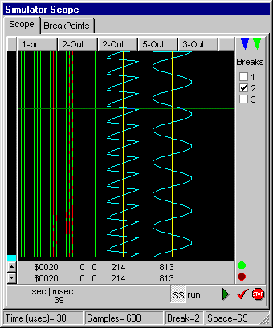
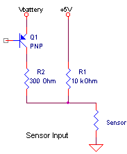

September 2002
JALss, RCX device
This is preliminary information, giving some information about my plans to inplement and RCX-device in JALss.
(modifications to Bricxcc)
|
Introduction
In JALss you can simulate the (partial) behaviour of one or more RCX devices, including sensors and actuactors, on a PC. It's not the intension of this simulator the mechanical dynamics of robots, but a simple car driving in a room with obstacles (like the picture below) must be possible.
To be compatible with Lego-environements, the functional layout of JALss is based on BricksCC.
When this projects succeed, we should ask John Hanssen to make a one-touch-button "compile-simulate-debug" ;-)
On the right an already real picture of how the RCX-device will probably look in JALss, the background image is taken (with permission) from Brian Bagnall (who rendered this image) and can also be seen at the site of Andy Gombos.
 |
|
|
BricxCC and the virtual RCX
Start JALss first, then start Bricxcc, so Bricxcc can find (one of) the virtual RCXs.
With the direct control of Bricxcc, you can control the virtual RCX.
With the joystick of Bricxcc it's also possible to control the virtual RCX, but the left mouse clicks don't work well (right mouse clciks are ok).
... |
|
|
Advantages of a simulator
- you can look "into" the RCX, and watch the internal variables and states you can just run the "final" program and focus on a small part of the program by breakpoints and single stepping
- you don't need a real RCX, just a PC to build, test and debug
- you can test your homebuild sensors without building them
- you don't need expensive equipment like a scope to see the electrical signals at in and output
- you can define electro-mechanical disturbances (like the bouncing of touchsensors)
- it could improve your insight in the internals of hardware and software, especially for the non-electronic educated under us
- ...
|
 |
|
Disadvantages of a simulator
- the simulation is always limited, due to implementation and bugs
- it's less fun to bump into a virtual wall then a real wall
- ...
|
|
|
|
Sensor Input 
The sensor signals can be seen on one of the build in scopes, as shown on the right.
The 3 upper traces shows the the 3 sensors as a function of time, while the lowest trace shows a dummy motor signal, so you can compare the relative timing of these signals.
At the left of each signal the following information is displayed (taken the upper-trace as an example):
Sens-1 : the name of the sensor
512 : the raw value
Bool : the sensor mode
0 : the sensor value in "real world value"
There's also an extra connection pin for each sensor (not shown in the picture on the right), taht can be used to watch the internally sampled signal on an external scope.
On the right there's a panel with test sensors, which will be visible (and can be controled) in all the views of the RCX. This gives the ability to the test a program with different sensors, without the need to make the real connections to the RCX. The test-sensors can only simulate a pure resistive component.
With the switch button, you can connect / disconnect the test-sensor. The resistor value of the sensor can be edited in the edit-field, or set in a rough and fast way trough the trackbar. The trackbar can only set the resistor value between 100 and 100 kOhm (it's position behaves logarithmic) , while the edit-field has no limitations.
Pressing the puls-button will momentary (a random time between 0 and 500 msec) toggle the setting of the switch.
|
The sensor output is simulated by the circuit on the right.
In the passive period only a pull-up resistor to +5V is active.
While in the active period also a 300 Ohm pullup to Vbattery is switch on.
The real measurement is done in the passive periods.
More detailed information about the RCX internals can be found here. |
 |
|
Sensor 1 is set as a passive sensor in Boolean mode. The raw value of 512 (caused by a resistor of 10 kOhm) could either be zero or one, because of the 45 / 55% hysteresis.
Sensor 2 is set as an active sensor in Celcius temperature mode, indicating it's almost freezing. It's of course not advisible to set the sensor in active mode for measuring temperature, because it will heat up the sensor. But on the other hand this is maybe a way to measure air-speed !
Sensor 3 is set as an active sensor in Fahrenheit temperature mode.
In this case the trackbar slider was moved from the right to the left, reflecting a sharp decrease in resistance. This tracks demonstrates clearly the effect on the voltage at the RCX terminals, both in the active and the passive periods. |
|
Motor Output
The motor output signals can be monitored on the build-in scope. The shown signals are a quiet realistic simulation of the real signals measured with an oscilloscope.
If an impedance R<=100 Ohm is connected, it's assumed to be a motor, so noise is added to the signal, simulating the generated EMK from the motor.
Also the mechanical load on the motor is indicated by the voltage drop in the inactive periods. The internal resistance of the motor outputs is 10 Ohm in active periods and 10 kOhm in inactive periods.
The incorrect things in the motor signals are: the frequency of the noise is not synchronuous with the motor speed, the shape of the noise is not correct, the amplitude of the noise stays constant, while it should increase with increasing mechanical load, the high frequency glitches due to the voltage switching on an induction are not shown.
Upper trace shows the motor signal of motor-A, which is switched on, in the forward direction with a motor-power of 0. The mechanical load on the motor is very light, which can ve seen from the only slight drop of the motor voltage in the inactive periods. If the motor was mechanically totally unloaded, the output voltage would be at Vbattery the whole time., despite the motor-power of 0.
The next trace shows motor-B (forward, at power=1), which is mechanically more heavily loaded.
The third trace shows motor-C which is mechanical very heavy loaded, in this case it's even possible the motor isn't rotating anymore. |
|
|
When connecting a resitive load >100 Ohm, a totally different signal will appear.
The signal shows an RC-curve (exponential decay) which is calculated from the external connected resistor and the internal capacitor (100 nF, measured through RC-curves).
The traces shows to motor output with different resistive loads.
motor-A : 2.5 MOhm
motor-B : 100 kOhm
motor-C : 10 kOhm
The timebase can be set at the bottom, to 1 ms/div (as shown) or more compressed to 8 ms/div (8ms is one full motor cycle). When the timebase is set to 8 msec/div, the sense signal will disappear.
The fourth trace shows symbolic a sensor signal, to make a comparison in time between motor and sensor signals. |
|
|
Sound
The PC-speaker is used as the sound simulation device. Due to the limitations of win-NT systems (NT, 2000, XP) it's not possible to implement the "SoundMute" function and also it's not possible not play tones at the simulation speed. So sounds are always played and systemsounds or individual notes are always played in realtime. So if the simulation runs slow (due to other devices in the circuit), the individual notes are played in realtime, introducing larger gaps between the individual tones.
All sounds are recorded in a listbox, so they can be playbacked in realtime.
The first column contains the frequency in Hertz, the second column the duration of the sound in msec and the third column contains the starttime in msec. (In the example on the right, the realtime is not correctly shown, but it's compressed by a factor 10). Systemsounds (0..6) are indicated by a frequency between 0 and 6 and a duration of 0.
By pressing the "Play" button, the selected lines will be played (as a whole) in realtime.
By pressing the "Delete" key, the selected lines will be removed from the list. |
|
|
Code Window
In the code window you can see the Lego assembler code (with real NQC variable names), you can control the simulation and see task priorities and activities.
You can watch the assembler of 2 tasks simultaneously. With the blue separation bar you divide the window to your needs.
When the simulator is not running, the highlighted lines in the code-windows, shows the next instruction that will be executed.
On the right you can see there are 3 tasks, task 0 and 1 are stopped=red and task 2 is running=green. There is a third color, suspended=yellow.
The priority of the tasks is symbolized by the height of the bars.
Selecting the task of which the code is displayed in the upper code window, can either be selected by the upper spin-control or by pressing with the left mousekey on one of the taskbars.
The lower code window, lower spin-control of right mousekey.
Then right below, you see the standard simulator controls + 2 extra simulator buttons, marked with "1". These special marked buttons will assure that a single step or a loop is done in the time parameters of the RCX (and not any other CPU somewhere in the simulation). For more information see ...
Then one other important control trick: when the simulation is not running, as soon as you press anything on the code tab, focus is always shifted to a central control.
This central control enables you to single step this RCX by pressing the spacebar. |
|
The information below this line is just for my personal use.
Design of the motor output Timing
Looking with a scope on the motor ports and sensor ports (in active mode), you'll find that 2 complete motor periods equals 5 sensor readings, they are perfectly synchronuous. Some drawings of earlier measurements can be found here.
The Puls Width Modulation (PWM) divides 1 motor period into 8 equal sections. So we've to find the "kleinste gemene veelvoud" ("smallest common multiple" ??) of 5 and 16, which is obvious 80. There is still one other consideration, the sensor value is read in about 100 usec (probably it's exactly 1/32 of the sensor period, which is about 3 msec). So using a time resulotion of 100 usec (which is standard available in JALss) will do quiet nice.
In that case a motor period will be 8 msec (in real it's 7.5 msec) and a sensor period will be 3.2 mec (in real 3 msec). If necessary it's possible to increase the time resolution, but in the case of the RCX having the highest clock-frequency it's a waste of computing time.
Impedance
This is not an easy part, because a motor will behave like an inductor and will generate voltage, depending on the mechanical load.
So here I've made some simplications, based on measurements with both pure resistive load and the lego-motor as a load.
With a resistor of 100 kOhm, a full exponential curve is drawn in about 6 msec. So the time-constant is estimated at 3 msec, yielding a capacitor inside the motor output of 30 nF.
With the motor connector you'll see almost a perfect DC voltage, approximately equal to the battery voltage. When a mechanical load is attached, a perfect square wave shows up (besides the high frequency glitches), where the voltage in the inactive periods drops towards zero. The voltage drop is depending on the mechanical load, the higher the load, the more deeper the drop.
Based on the above measurements I've implemented 2 algoritmes, one for a motor load and one for a resistive load.
With the given time-constant it seems that a pure resistive load of 3 MOhm can be just seen. So we choose 3 MOhm as the maximum resistive load, even when there's no connection at all to the motor-output. Below 1000 Ohm, no change can be seen, so 1000 Ohm will be the lowest resistive impedance. It's logical that with a motor load, the impedance will be in the same order of magnitude, so changing from resistive and motor will have an equal impact on the signals. So the motor will have an impedance of 3 MOhm when mechanical unloaded and an impedance of 1000 Ohm when mechanical full loaded (even mechanical stopped). The real impedance of the motor is of course much lower.
Software Interface
at p99, the 60 msec (BRAKE) is explained when switching direction, this only yields for the statement "SetDirection" !!
For each motor RIS2.0 has 2 registers 3[0..2] = "Motor Status" and 17[0..2] = "Global Motor Status".
Both registers have the same bit definition
2-0 = power
3 = direction (1=forward)
5-4 = remote command overlay ???
6 = brake=1 / float=0 (this bit has no meaning in the Global-Motor-Status
7 = on=1 / off=0
OnOffFLoat ($21, p27)
2-0 = motorlist
7-6 = Float=0 / Off=1 / On=2
SetFwdSetRwdRewDir ($E1, p38) sets MOTOR-STATUS
2-0 = motorlist
7-6 = Backwards=0 / Reverse=1 / Forwards=2
SetNormSetInvAltDir ($77, p43) sets GLOBAL-MOTOR-STATUS
2-0 = motorlist
7-6 = Backwards=0 / Reverse=1 / Forwards=2
SetPower ($13, p64), motor-list, source, index sets MOTOR-STATUS
SetMaxPower ($13, p64), motor-list, source, index sets GLOBAL-MOTOR-STATUS
Switching the motor direction, passes a brake-state of 60 msec (8 full motor cycles, 8*7.5=60)